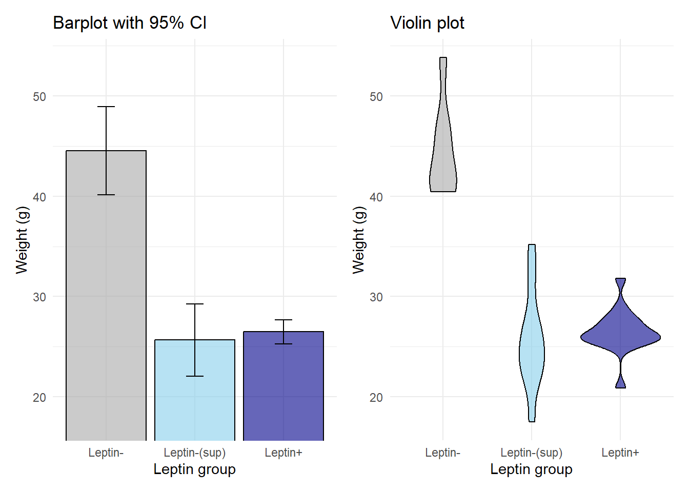
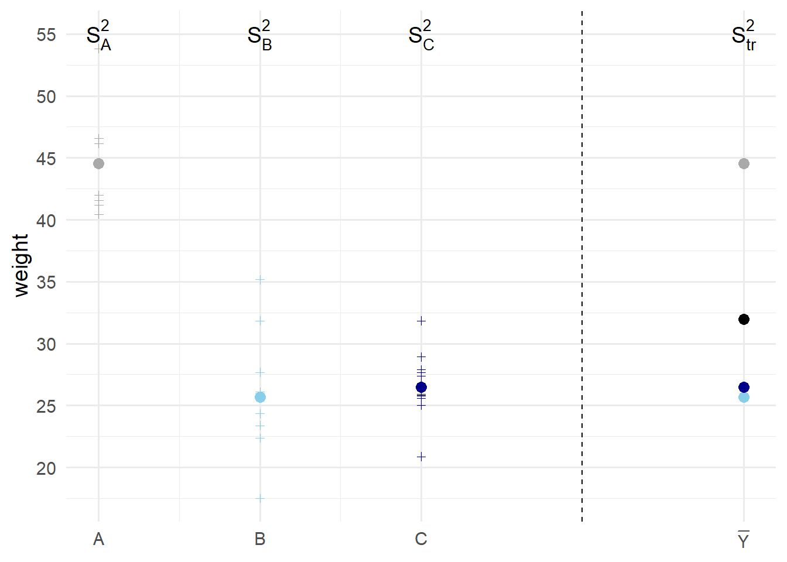
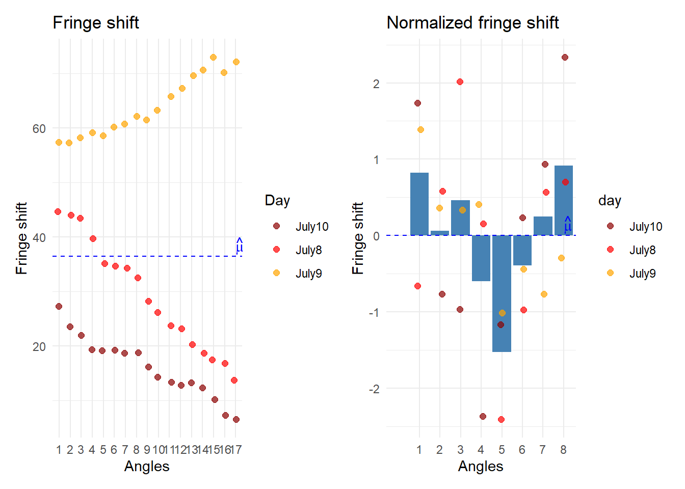

Chapter 17 Mean differences across several groups
Experiments may be subjected to more than two conditions. We will first consider experiments with categorical and mutually exclusive conditions: if an experimental unit belongs to one condition, it cannot belong to another. For instance, in a study of all-cause mortality, patients may die from coronary disease, cancer, or respiratory conditions; or in a population genetics study, we may examine allele frequencies across different global populations. In both cases, we would like to know whether the set of conditions under study influences the outcome. If at least one condition changes the outcome, that is enough to conclude that the categorical random variable encoding the conditions (as different levels) influences the properties of the experiment, and therefore its outcomes.
If the outcome is a continuous variable, we are often interested in how its mean changes across the categories of the condition variable. The categories of the condition variable are usually referred to as groups. In this chapter, we will generalize the test for differences between two means to the case of many groups, that is, many levels of a categorical variable. We will do this using analysis of variance (ANOVA), which compares the variance within groups against the variance between groups. We will illustrate this analysis with data showing that leptin deficiency can cause obesity.
In ANOVA, we explain the observed variation by decomposing it into additive sources. Some sources of variation are of primary interest and define the hypotheses we want to test, while others correspond to systematic error that we try to control for. Using Michelson and Morley’s classic data, we will see that accounting for multiple sources of variation in the measurement of the speed of light was key to showing that light travels at the same speed in any direction.
Conditions may also arise from different types of categorical variables, and in such cases they are not mutually exclusive. For example, when studying mortality, disease type (cause of death) may be one condition type, and sex another; in genetics, we may study allele frequencies across different regions (first type of condition) and across different species (second type). To handle these situations, we will introduce the two-way ANOVA, which allows us to measure the independent contributions of two different condition types.
Finally, we will use two-way ANOVA with interaction, which tests whether at least one combination of the two categorical variables produces effects that cannot be explained by the independent contributions of each variable alone. We will illustrate this by analyzing the differential effect of leptin deficiency in the weight of females.
17.1 Different means among several conditions
Example (Leptin knockouts)
Leptin is a hormone that regulates satiety. Ramos-Lobo and colleagues tested the additional effect of leptin during neurodevelopment in mice (Ramos-Lobo et al. 2019). In their study, they reported the weight of 16 male mice with normal leptin function, 7 male mice in which the leptin gene was knocked out, and 10 knockout mice that received leptin hormone injections. The inclusion of this third group demonstrates that lean weight can be partially restored by leptin supplementation, showing that leptin deficiency itself causes weight gain.
For this data, we assume three experimental conditions:
The weight of the control animals (wild type, Leptin+) follows
\[ Y_A \sim N(\mu_A, \sigma^2) \]
The weight of the knockout animals injected with leptin follows (Leptin-(sup))
\[ Y_B \sim N(\mu_B, \sigma^2) \]
The weight of the knockout animals without leptin follows (Leptin-)
\[ Y_C \sim N(\mu_C, \sigma^2) \]
17.2 Data
One random experiment in this study can be considered to have two outcome components: \((\text{leptin}, \text{weight})\).
Leptin status is a categorical variable determining the experimental condition:
\[ leptin \in \{ \text{Leptin+ : A},\ \text{Leptin-(sup) : B},\ \text{Leptin- : C} \} \]Weight is the continuous outcome of interest:
\[ weight \in (20, 60) \]
The data look like:
\[ \begin{array}{ccc} \mathbf{Mouse} & \mathbf{Leptin} & \mathbf{Weight} \\ 1 & \text{Leptin+} & 27.67 \\ 2 & \text{Leptin+} & 27.40 \\ 3 & \text{Leptin+} & 25.77 \\ 4 & \text{Leptin+} & 25.60 \\ 5 & \text{Leptin+} & 25.03 \\ 6 & \text{Leptin+} & 25.90 \\ 7 & \text{Leptin+} & 26.67 \\ 8 & \text{Leptin+} & 25.60 \\ 9 & \text{Leptin+} & 28.93 \\ 10 & \text{Leptin+} & 31.83 \\ 11 & \text{Leptin+} & 25.90 \\ 12 & \text{Leptin+} & 26.30 \\ 13 & \text{Leptin+} & 27.90 \\ 14 & \text{Leptin+} & 26.77 \\ 15 & \text{Leptin+} & 25.83 \\ 16 & \text{Leptin+} & 20.87 \\ 17 & \text{Leptin-(sup)} & 24.33 \\ 18 & \text{Leptin-(sup)} & 22.37 \\ 19 & \text{Leptin-(sup)} & 26.10 \\ 20 & \text{Leptin-(sup)} & 17.50 \\ 21 & \text{Leptin-(sup)} & 35.17 \\ 22 & \text{Leptin-(sup)} & 25.97 \\ 23 & \text{Leptin-(sup)} & 27.67 \\ 24 & \text{Leptin-(sup)} & 23.37 \\ 25 & \text{Leptin-(sup)} & 31.83 \\ 26 & \text{Leptin-(sup)} & 22.37 \\ 27 & \text{Leptin-} & 46.57 \\ 28 & \text{Leptin-} & 40.43 \\ 29 & \text{Leptin-} & 41.97 \\ 30 & \text{Leptin-} & 41.17 \\ 31 & \text{Leptin-} & 41.57 \\ 32 & \text{Leptin-} & 46.17 \\ 33 & \text{Leptin-} & 53.83 \\ \end{array} \]
17.3 Difference between means
We compute the mean and standard deviation of weights within each group:
- \(n_A = 16\) control mice (Leptin+) had a mean \(\bar{y}_A = 26.50\) and \(s_A = 2.25\)
- \(n_B = 10\) knockout mice with leptin replacement (Leptin-(sup)) had a mean \(\bar{y}_B = 25.67\) and \(s_B = 5.03\)
- \(n_C = 7\) knockout mice without leptin (Leptin-) had a mean \(\bar{y}_C = 44.53\) and \(s_C = 4.77\)
We can visualize the distributions with bar plots and violin plots:

The wild type mice (Leptin+) and the knockout mice that received leptin supplementation (Leptin-(sup)) show similar mean weights. In contrast, knockout mice without leptin (Leptin-) have a much higher average weight. Since the confidence interval for this group does not overlap with those of the other two groups, we conclude that the mean weight of leptin-deficient mice is significantly higher. The violin plots further illustrate differences in the distribution of weights across groups.
When testing differences in means between two groups, the null hypothesis assumes that the means are equal. When comparing more than two groups, the null hypothesis is that all groups share the same mean. The alternative is that at least one group has a different mean. This motivates the use of analysis of variance (ANOVA).
17.4 Hypothesis test
Let us now formulate the hypothesis contrast:
Null hypothesis
\[ H_0: \mu=\mu_A = \mu_B = \mu_C \]
The null hypothesis assumes that there are no differences among the group means. In this case, all bars in the bar plot would align at the same height, within the margin of their confidence intervals.Alternative hypothesis
\[ H_1: \text{at least one } \mu \neq \mu_i \quad \text{for some $j$} \]
The alternative hypothesis assumes that at least one group mean is different from the others. At least one bar in the bar plot is clearly distinct from the rest.
How can we test these hypotheses? We seek a statistic whose value allows us to decide whether to reject or retain \(H_0\).
For simplicity, assume that all groups have the same number of observations,
\[
n_A = n_B = n_C = n
\]
This means each condition contains the same number of mice in the leptin example, for a total of \(3n.\) mice. Such a situation is called a balanced design. The results we will derive still hold approximately if we replace \(n\) by the average number of observations per group,
\[
n = \frac{1}{k} \sum_{i=1}^k n_i.
\]
17.4.1 Distribution of group means under \(H_0\)
If the null hypothesis is true, there are no differences between group means and they all coincide with a single common mean \(\mu\):
\[ \mu_A = \mu_B = \mu_C = \mu. \]
Therefore, each group average follows the same distribution:
\[
\bar{Y}_A, \bar{Y}_B, \bar{Y}_C \sim N\!\left(\mu, \frac{\sigma^2}{n.}\right).
\]
The observed vector of means,
\[
m = (\bar{y}_A, \bar{y}_B, \bar{y}_C),
\]
can be interpreted as the result of an averaging experiment: we repeatedly sample \(n\) weights in each of the three conditions and take their averages. If \(H_0\) holds, these three averages are independent estimates of the same underlying mean \(\mu\).
17.4.2 Sources of variation
We can distinguish two sources of dispersion in the obervatons of the experiment:
Within-group variance (\(\sigma^2\))
– the natural dispersion of individual outcomes in each condition, which reflects the variability of the original random experiment.Between-group variance (\(\sigma^2_{\bar{Y}}\))
– the dispersion of the group averages, which reflects how different the sample means are from one another.
Under the null hypothesis, changing conditions does not affect the group averages, because the outcomes are independent of the conditions. By the law of large numbers, as the number of experiments \(n\) in each group increases, the averages converge to \(\mu\). Hence, the variance of the averages decreases as
\[
H_0: \quad \sigma^2_{\bar{Y}} = \frac{\sigma^2}{n}.
\]
If, however, one group has a true mean different from \(\mu\), its average will not get close to \(\mu\) as \(n.\) grows. In that case, the between-group variance will be larger than expected under the null:
\[
H_1: \quad \sigma^2_{\bar{Y}} > \frac{\sigma^2}{n}.
\]
17.5 Variance components estimators
To test the null hypothesis, we need estimators for the two variance components:
- the within-group variance \(\sigma^2\),
- the between-group variance \(\sigma^2_{\bar{Y}}\).
Estimator of the within-group variance
Within each group, the data vary around their group mean. For example, in group \(A\), the sample variance is
\[ S_A^2=\frac{1}{n-1} \sum_{i=1}^{n} (Y_{Ai}-\bar{Y}_{A})^2. \]
where \(i\) denotes the \(i\)-th repetition of the experiment under condition \(A\). If we only considered the control mice (group \(A\)), this sample variance \(S_A^2\) would be an unbiased estimator of the population variance \(\sigma^2\).
Since we assume all groups share the same variance \(\sigma^2\), we can combine information from all groups by averaging their sample variances:
\[ S_e^2 = \frac{1}{k}\sum_{j=1}^k S_j^2. \]
where \(k\) is the number of groups, or conditions of the experiment. This pooled estimator \(S_e^2\) is called the mean square error (MSE). It represents the variability of the random experiment within conditions.

Estimator of the between-group variance
Now let us look at the variability of the group means. This is the right-hand side of the plot, where we see how the group means disperse around the overall mean (black point in in the plot).
For each group mean \(\bar{Y}_j\):
\[ V(\bar{Y}_j) = \frac{\sigma^2}{n}, \quad \text{if } H_0 \text{ is true}. \]
Thus, under the null hypothesis, the group means behave like repeated estimates of the same mean \(\mu\).
The sample variance of the group means is
\[ S^2_{tr}=\frac{1}{k-1} \sum_{j=1}^k (\bar{Y}_{j}-\bar{Y})^2, \]
where \(\bar{Y}\) is the overall mean across all observations:
\[ \bar{Y}=\frac{1}{k}\sum_{j=1}^k \bar{Y}_j = \frac{1}{kn}\sum_{j=1}^k \sum_{i=1}^n Y_{ji}. \]
This statistic \(S^2_{tr}\) estimates the variance of the group means, \(\sigma^2_{\bar{Y}}\).
The F-ratio
If the null hypothesis is true and the number of observations per group grows large, then all the group means converge to the same overall mean \(\mu\). Consequently, the variance of the group means should be close to its expected value \(\sigma^2/n\). Remember that \(V(\bar{Y})=\sigma^2/n\) which is estimated by \(S_{tr}^2\).
On the other hand, \(S_e^2\) estimates \(\sigma^2\) and therefore \(S_e^2/n\) is another estimation of the group variance \(\sigma^2/n\).
This leads to the F statistic:
\[ F=\frac{S_{tr}^2}{S_e^2/n}. \]
- Under \(H_0\), \(F\) is close to \(1\). As \(n\) increases the outcomes get close to their means, which get close to the overall mean.
If the null hypothesis is not true and we take more and more observations in each group, then at least one group mean will not converge to the common mean. For example, if \(\mu_B=\mu_C=\mu \neq \mu_A\), the averages from groups \(B\) and \(C\) will get closer to \(\mu\), but the average from group \(A\) will concentrate around \(\mu_A \neq \mu\). As a result, the expected value of \(S^2_{tr}\) will be larger than \(\frac{\sigma^2}{n}\), because there is an irreducible component of variability due to the difference of the group \(A\) with the rest.
In this situation, we say that the data contain treatment variance (variance explained by group differences) in addition to the random within-group variance. Consequently, the \(F\) statistic will tend to be greater than 1, providing evidence to reject the null hypothesis.
- Under \(H_a\), at least one group mean differs, so \(S_{tr}^2\) becomes larger than \(\sigma^2/n\), making \(F > 1\).
Intuitively, \(F\) measures how much the group means are separated relative to the noise inside groups.
Sums of squares formulation
In practice, the \(F\)-statistic is reported as a ratio of mean sums of squares:
\[ F = \frac{MST}{MSE}, \]
where
Mean Square for Treatments (MST):
\[ MST = \frac{1}{k-1}\sum_{j=1}^k n(\bar{Y}_j-\bar{Y})^2 = \frac{SS_{Group}}{k-1}, \]Mean Square Error (MSE):
\[ MSE = \frac{1}{k(n-1)}\sum_{j=1}^k\sum_{i=1}^n (Y_{ji}-\bar{Y}_j)^2 = \frac{SS_{Residual}}{k(n-1)}. \]
Since sums of squares are quadratic forms of normally distributed variables, each scaled variance follows a chi-square distribution with its respective degrees of freedom. Their ratio follows an F distribution:
\[ F \sim F(k-1,\,k(n-1)). \]
Here, \(k\) is the number of groups, and \(n\) the number of observations per group (balanced design). In unbalanced designs, \(n\) is replaced by the actual group sizes, and the degrees of freedom are adjusted accordingly.
17.6 Analysis of variance (ANOVA)
The hypothesis test for the difference in means across several groups is then
\(H_0: \mu_1=\mu_2= ...=\mu_k\). There are no difference between group means. Then, the observed value of \(F\), e.g \(f_{obs}\) will be near \(1\).
\(H_1:\) at least one \(\mu_i\) is different from the rest. Then, the observed value of \(F\), e.g \(f_{obs}\) will be greater than \(1\).
Example (Mice knockouts)
The value of the \(f_{obs}\) computed from the group (treatments) mean and residual (error) mean squares can be calculated in any statistical software that usually outputs the ANOVA table
Python:
import pandas as pd
import statsmodels.api as sm
from statsmodels.formula.api import ols
dat = pd.DataFrame({"group": ["Leptin+", "Leptin+",
"Leptin+", "Leptin+", "Leptin+","Leptin+", "Leptin+",
"Leptin+", "Leptin+", "Leptin+",
"Leptin+", "Leptin+", "Leptin+", "Leptin+", "Leptin+",
"Leptin+", Leptin-", "Leptin-", "Leptin-", "Leptin-",
"Leptin-", "Leptin-", "Leptin-", "Leptin-(sup)",
"Leptin-(sup)", "Leptin-(sup)", "Leptin-(sup)",
"Leptin-(sup)", "Leptin-(sup)", "Leptin-(sup)",
"Leptin-(sup)", "Leptin-(sup)", "Leptin-(sup)"],
"weight": [27.67, 27.4, 25.77, 25.6, 25.03, 25.9, 26.67, 25.6,
28.93, 31.83, 25.9, 26.3, 27.9, 26.77, 25.83, 20.87,
46.57, 40.43, 41.97, 41.17, 41.57, 46.17, 53.83,
24.33, 22.37, 26.1, 17.5, 35.17, 25.97, 27.67,
23.37, 31.83, 22.37]})
model = ols('weight ~ group', data=dat).fit()
anova_table = sm.stats.anova_lm(model, typ=2)
print(anova_table)
R:
dat <- data.frame(
group=c("Leptin+", "Leptin+", "Leptin+", "Leptin+",
"Leptin+", "Leptin+", "Leptin+", "Leptin+", "Leptin+",
"Leptin+", "Leptin+", "Leptin+", "Leptin+", "Leptin+",
"Leptin+","Leptin+", "Leptin-", "Leptin-", "Leptin-",
"Leptin-", "Leptin-", "Leptin-", "Leptin-",
"Leptin-(sup)", "Leptin-(sup)", "Leptin-(sup)",
"Leptin-(sup)", "Leptin-(sup)", "Leptin-(sup)",
"Leptin-(sup)","Leptin-(sup)", "Leptin-(sup)",
"Leptin-(sup)"), weight=c(27.67, 27.4, 25.77, 25.6,
25.03, 25.9, 26.67, 25.6, 28.93, 31.83, 25.9, 26.3,
27.9, 26.77, 25.83, 20.87, 46.57, 40.43, 41.97, 41.17,
41.57, 46.17, 53.83, 24.33, 22.37, 26.1, 17.5, 35.17,
25.97, 27.67, 23.37, 31.83, 22.37))
summary(aov(lm(weight~group, data=dat)))\[ \begin{array}{cccccc} &\mathbf{Df} & \mathbf{Sum Sq} & \mathbf{Mean Sq} & \mathbf{F value} & \mathbf{Pr(>F)} \\ \mathbf{group} & 2 &1861.5& 930.8 & 63.37 &1.69\times10^{-11}\\ \mathbf{Residuals}& 30 &440.6& 14.7 & & \\ \end{array} \]
In this table \(MST\) is the mean squares for the group (treatment), computed as the corresponding sum of squares divided by the degrees of freedom (\(k-1=2\)).
\[MST=\frac{1}{k-1}SSq_{group}=930.77\] \(MSE\) is the mean squares for the residuals (error), computed as the corresponding sum of squares divided by the degrees on freedom (\(k(n-1)=30\)), where \(n=(16 + 7 + 10)/3=11\) is the average number of observations in each group
\[MSE=\frac{1}{k(n-1)}SSq_{Residual}=14.69\]
The observed value of the statistic is
\[f_{obs}=\frac{MST}{MSE}=63.373\]
To test the the null hypothesis, we then compute the probability that in a future experiment, if the null hypothesis is true, we observe a higher value than \(63.373\): \(P(F>63.373)\). This probability is the upper tailed p-value
\[pvalue=1-F_{Fisher(2,30)}(63.373)=1.694 \times 10^{-11}\]
which is much lower than \(\alpha=0.05\), suggesting significant differences in at least one group mean. Therefore, we reject the null hypothesis and accept that at least one of the groups has a different mean from the rest.
In this experiment, we observed a significant difference between groups (ANOVA test \(F(2,30)=63.373, pvalue= 1.69 \times 10^{-11}\)), indicating that at least one group has a different mean from the rest. We call it an omnibus test. ANOVA test is simultaneously testing all the groups and by itself it does not tell us which groups or group is different. Clearly, from the plots, the knockout mice has higher weights than the other two groups.
17.7 ANOVA for Two Groups
ANOVA is often complemented by pairwise comparisons. When there are only two groups, ANOVA is equivalent to the two-sample \(t\)-test. In fact, the \(F\)-test in ANOVA can be seen as a direct generalization of the \(t\)-test to more than two groups.
Let us explicitly compute the observed value of \(F\) when we have only two groups of equal size \(n\):
\[ f_{obs}=\frac{\tfrac{1}{2}(\bar{y}_{A}-\bar{y}_{B})^2}{\tfrac{s_p^2}{n}} \]
Here, the numerator comes from simplifying \(S_{tr}^2\) for two groups, and \(s_p^2\) is the pooled variance:
\[ s_p^2 = \frac{s_A^2 + s_B^2}{2} \]
which is obtained from \(S_e^2\) when both groups have the same number of observations.
Taking the square root of \(f_{obs}\) and rearranging, we recover the familiar \(t\)-statistic:
\[ t_{obs} = \sqrt{f_{obs}} = \frac{\bar{y}_{A} - \bar{y}_{B}}{\sqrt{\tfrac{2s_p^2}{n}}} \]
Thus, the two-sample \(t\)-test for the difference between two balanced groups with equal variances is just a special case of the ANOVA \(F\)-test, with \(f_{obs}=t_{obs}^2\). In other words, ANOVA is a direct generalization of the \(t\)-test to multiple groups.
Example (Wild type and knockout mice)
We are now interested in comparing the weights between knockout mice with supplemented leptin (group B) and wild type mice (group C). The goal is to confirm that lean weight has been restored by exogenous supplementation of the hormone. We perform a \(t\)-test. The observed statistic is
\[t_{obs}=\frac{\bar{y}_A-\bar{y}_B }{\sqrt{\frac{s^2_p}{n_A}+\frac{s^2_p}{n_B}}}=\frac{26.49813-25.668}{\sqrt{\frac{12.66079}{10}+\frac{12.66079}{7}}}=0.5787438\]
using the pooled variance for unbalanced groups.
Therefore, the observed \(F\) is
\[f_{obs}=t_{obs}^2=(0.5787)^2=0.3349\]
The upper-tailed p-value for \(f_{obs}\) using the Fisher distribution is
\[pvalue=1-F_{Fisher,1,18}(0.3349)= 0.56\]
with \(k=2\) and \(n=18\) as the average number of observations per group.
We can confirm that the \(t\)-test and the ANOVA for two groups give the same result.
R:
t.test(weight~group, data=dat, subset = which(dat$group!="Leptin-"),
equal.variance=FALSE)
summary(aov(lm(weight~group, data=dat, subset = which(dat$group!="Leptin-"))))Note that knockout mice with leptin supplementation recovered wild-type weight. When we perform a two-sample \(t\)-test between these two groups, we find that we cannot reject the hypothesis that their expected weights are the same (\(t_{obs}=0.5787\), \(pvalue=0.56\)). Demonstrating that a phenotype caused by knocking out a gene can be rescued by exogenous supplementation provides strong evidence that leptin deficiency can lead to significant weight gain.
17.8 Linear model
The following formulation is useful for integrating different types of analyses. Let us classify the observations of the random variable \(Y\) using the group \(j\) and the particular observation \(i\).
Let us consider first a group \(j\) and that the expected value of \(Y\) in group \(j\) is
\[E(Y_j)=E(Y_{ji}\mid j)=\mu_j.\]
We are making explicit that each condition has its own mean, which we estimate with the sample average \(\bar{Y}_j\). Now we can write
\[\mu_j=\mu + \alpha_j,\]
where \(\mu\) is the overall expected value of all outcomes across groups (\(E(Y)=\mu\)), and \(\alpha_j\) is the amount by which the mean in group \(j\) deviates from \(\mu\). For example, \(\mu_{\text{leptin+}}\) is the expected weight of a wild-type mouse, \(\mu\) is the overall average weight across all groups, and \(\alpha_{\text{leptin+}}\) is the deviation of the wild-type mean from the overall mean. Under the null hypothesis, \(\alpha_j=0\) for all \(j\).
Let us now take a random sample of size \(n_j\) from condition \(j\):
\[M=(Y_{j1}, Y_{j2}, \ldots, Y_{jn_j}).\]
For instance, \(Y_{\text{leptin+},3}\) is the random variable measuring the weight of the 3rd mouse under the wild-type condition, while \(y_{\text{leptin+},3}\) denotes its observed value.
We now assume that we can separate the systematic and random components of the variation and write the linear model:
\[Y_{ji} = \mu_j + \varepsilon_{ji},\]
or equivalently,
\[Y_{ji} = \mu + \alpha_j + \varepsilon_{ji},\]
where \(\varepsilon_{ji}\) is a random variable called the error, which has expected value \(E(\varepsilon_{ji})=0\) and variance \(V(\varepsilon_{ji})=\sigma^2\). It represents the deviation of the individual observation from its group mean. For instance, \(\varepsilon_{\text{leptin+},3}\) is the difference between the weight of the 3rd wild-type mouse and the group mean \(\mu_{\text{leptin+}}\).
In ANOVA, we assume that the variance of \(Y\) is the same across groups (homoscedasticity):
\[V(Y_j)=\sigma^2 \quad \text{for all } j.\]
This formulation makes explicit all the components that contribute to the variation of each observation in the experiment.
Sources of variation
When repeating a random experiment under condition \(j\) for the \(i\)-th time, the outcome \(Y_{ji}\) can be explained as the sum of:
- the overall mean \(\mu\)
- the effect of condition \(j\) on the overall mean \(\alpha_j\)
- the random error \(\varepsilon_{ji}\) around the group mean \(\mu_j\), with variance \(\sigma^2\)
Hypothesis contrast
In this formulation the hypothesis contrast can be written as:
- \(H_0:\ \alpha_j=0 \ \text{for all } j\). That is, there are no differences between the group means and the overall mean \(\mu\).
- \(H_1: \alpha_j \neq 0\) for at least one \(j\). At least one group mean differs from the overall mean \(\mu\).
We again use the \(F\) statistic to decide between the two hypotheses.
Example (Speed of light)
In 1887, Michelson and Morley attempted to explain why stars appear to slightly change their positions in the sky depending on the Earth’s motion around the Sun (Michelson and Morley 1887). If the Earth were moving away from a star, its light would arrive later, creating a small apparent shift in its position when compared to the stars toward which the Earth is moving. If light behaves as a wave, then the Earth would be moving relative to the medium that supports the wave — the so-called ether. However, the angular deviations predicted by this theory were much larger than those actually observed.
To address this discrepancy, Michelson and Morley devised their famous experiment. They mounted a device on the edge of a rotating platform and sent a light beam into it. The beam was split at the center of the platform into two perpendicular rays. Each ray was reflected by mirrors placed at the edges of the apparatus and then recombined at the center, producing an interference pattern directed back toward the starting point. The interference generated a bright fringe whose position could be precisely measured. Crucially, the position of this fringe depended on the relative distances traveled by the two rays, which in turn should have been affected by the direction and speed of the Earth’s motion through the ether.
They reasoned that when the apparatus was rotated to an angle \(r\) such that one ray aligned with the Earth’s motion through the ether, the other ray would experience the maximum relative path difference. In that configuration, the displacement of the interference fringe would also reach its maximum at \(r\).
The apparatus, mounted on a mercury-supported rotating table, was turned through 16 different orientations (with the final position coinciding with the first) and the measurements repeated over three consecutive days. The outcomes, expressed in units of screw divisions (each corresponding to 50 times the wavelength of light), recorded the observed fringe deviations.
\[ \begin{array}{cccc} \mathbf{Angle} & \mathbf{July 8} & \mathbf{July 9} & \mathbf{July 10} \\ 1& 44.7& 57.4& 27.3\\ 2& 44.0& 57.3& 23.5\\ 3& 43.5& 58.2& 22.0\\ 4& 39.7& 59.2& 19.3\\ 5& 35.2& 58.7& 19.2\\ 6& 34.7& 60.2& 19.3\\ 7& 34.3& 60.8& 18.7\\ 8& 32.5& 62.2& 18.8\\ 9& 28.2& 61.5& 16.2\\ 10& 26.2& 63.3& 14.3\\ 11& 23.8& 65.8& 13.3\\ 12& 23.2& 67.3& 12.8\\ 13& 20.3& 69.7& 13.3\\ 14& 18.7& 70.7& 12.3\\ 15& 17.5& 73.0& 10.2\\ 16& 16.8& 70.2& 7.3\\ 17& 13.7& 72.2& 6.5\\ \end{array} \]
If we treat the angles as different experimental conditions, each measured three times (once per day), then we can write
\[Y_{angle, day} = \mu + \alpha_{angle} +\varepsilon_{angle,day}\]
where \(E(Y_{\text{angle}, \text{day}})=\mu_{\text{angle}}=\mu + \alpha_{\text{angle}}\), and \(\text{day}\in\{\text{July 8}\), \(\text{July 9}\), \(\text{July 10}\}\). Our goal is to determine whether at least one \(\alpha_{\text{angle}}\) differs from the others, thereby rejecting the null hypothesis using ANOVA. When the board is set at a particular angle \(r\) such that the path difference between the two rays is maximal, the deviation of the fringe should also be maximal, and thus so should \(\alpha_r\).
However, as the figure shows, the experiment displayed large systematic errors that do not conform to an ANOVA model. First, within a single day, the measurements exhibited linear trends: the shift increased steadily with the angle. Second, across days, the results were systematically different: the measurements were consistently highest on July 9 and lowest on July 10.

To address the first error, the technique of the time was to compute the difference between the 17th and the 1st angle (which coincide because the board completes a full rotation) and divide it by 16. Each of these accumulated errors was then successively subtracted from the original measurements, producing a normalized outcome \(Y^*_{\text{angle}, i}\). The modern equivalent of this correction is to fit a regression line and use the residuals, as we will see in the next section.
For the second error, we average the measurements across days and explicitly include the day effect in the model of the normalized outcomes:
\[ Y^*_{\text{angle}, \,\text{day}} = \mu^* + \alpha^*_{\text{angle}} + \beta^*_{\text{day}} + \varepsilon^*_{\text{angle},\text{day}} . \]
A further corrected outcome, obtained by subtracting the daily mean \(\beta^*_{\text{day}}\), satisfies the ANOVA model we want to test:
\[ Y^{**}_{\text{angle}, \,\text{day}} \;=\; Y^{*}_{\text{angle}, \,\text{day}} - \beta^*_{\text{day}} \;=\; \mu^* + \alpha^*_{\text{angle}} + \varepsilon^*_{\text{angle},\text{day}} . \]
The bar plot shows that the corrected normalized outcomes at a given angle can now be considered as replications of the same experiment across three days. Michelson and Morley focused their analysis on half a rotation of the board (up to angle 8), resembling the pattern shown for the noon measurements, although they did not report in detail how they treated systematic errors (Handschy 1982).
In the plot, we can identify all the components of the model. The estimate of \(\mu^*\) is represented by the dotted line around zero, as the daily variation \(\beta^*_{\text{day}}\) has been removed. The effect of the angle \(\alpha^*_{\text{angle}}\) is shown by the bars, and the within-angle variability is reflected in the scatter of the individual points. The observed values of the model (denoted with lowercase) are
\[ y^{**}_{\text{angle}, \,\text{day}} \;=\; \hat{\mu}^* + \hat{\alpha}^*_{\text{angle}} + r^*_{\text{angle}, \,\text{day}} , \]
where \(r^*_{\text{angle}, \,\text{day}}\) are the residuals (the observed errors), \(\hat{\mu}^*\) is the overall mean of the corrected normalized observations, and \(\hat{\alpha}^*_{\text{angle}}\) are the estimated deviations at a fixed angle. Since the corrections for systematic errors were applied uniformly across all angles, they do not affect the hypothesis test, whose aim is to detect a privileged direction of Earth’s movement relative to the ether, and thus a maximal fringe shift at a specific angle.
The ANOVA table for the normalized data is
\[ \begin{array}{cccccc} &\mathbf{Df} & \mathbf{Sum Sq} & \mathbf{Mean Sq} & \mathbf{F value} & \mathbf{Pr(>F)} \\ \mathbf{Angle} & 1 & 0.06 & 0.0633 & 0.04 & 0.842 \\ \mathbf{Residuals} & 22 & 34.44 & 1.5653 & &\\ \end{array} \]
This ANOVA table shows that the data are consistent with the null hypothesis (\(pvalue = 0.842\)), meaning that all angles have the same average fringe shift after correcting for systematic errors. Thus, the experiment supports a model in which there is no privileged direction along which the speed of light could be reduced.
Based solely on the maximum observed fringe shift, Michelson and Morley’s original analysis concluded that the Earth’s velocity relative to the ether was undetectable with their apparatus, with an estimated measurement error of about one-sixth of the Earth’s orbital speed. Later, Einstein argued that their results are consistent with the principle that the speed of light is invariant and constitutes the maximum possible speed, and he derived the theoretical consequences in the theory of special relativity.
17.9 2-way ANOVA
The ANOVA approach allows the analysis of the joint effects of two or more different types of conditions, each with potentially different numbers of groups. In the Michelson and Morley experiment, they had six unreported measurements for each angle on each day, and they reported only the averages. In the original (unavailable) data, not only the angle but also the day could be considered as two different types of conditions, each with its own levels or groups.
Example (Leptin knockout)
Let us consider again the experiment of Ramos-Lobo on leptin knockout mice (Ramos-Lobo et al. 2019). In this experiment, female mice were also included, introducing an additional condition: sex. Since weight depends on the sex of the animal, we may ask whether weight is still statistically dependent on leptin deficiency even when we further condition on sex.
Here we are asking two simultaneous questions:
- Is there an effect of sex on the weight of the mice?
- Is there an effect of leptin deficiency on the weight of the mice?
17.10 Data
We introduce a conditional outcome. One random experiment — that is, one mouse — has three measurements: \((leptin, sex, weight)\).
Categorical variable for the first condition (leptin status) with two groups:
- \(leptin \in \{\text{KOplus: A}, \text{knockout: B}\}\)
Categorical variable for the second condition (sex) with two groups:
- \(sex \in \{\text{male: a}, \text{female: b}\}\)
Outcome of interest (continuous variable):
- \(weight \in (20, 60)\)
The data looks like
\[ \begin{array}{cccc} \mathbf{Mouse} & \mathbf{Leptin} & \mathbf{Sex} & \mathbf{Weigth} \\ 1&\text{Leptin-}&\text{M}&46.57 \\ 2&\text{Leptin-}&\text{M}&40.43 \\ 3&\text{Leptin-}&\text{M}&41.97 \\ 4&\text{Leptin-}&\text{M}&41.17 \\ 5&\text{Leptin-}&\text{M}&41.57 \\ 6&\text{Leptin-}&\text{M}&46.17 \\ 7&\text{Leptin-}&\text{M}&53.83 \\ 8 & \text{Leptin-(sup)}&\text{M}&24.33 \\ 9 & \text{Leptin-(sup)}&\text{M}&22.37 \\ 10& \text{Leptin-(sup)}&\text{M}&26.10 \\ 11& \text{Leptin-(sup)}&\text{M}&17.50 \\ 12& \text{Leptin-(sup)}&\text{M}&35.17 \\ 13& \text{Leptin-(sup)}&\text{M}&25.97 \\ 14& \text{Leptin-(sup)}&\text{M}&27.67 \\ 15& \text{Leptin-(sup)}&\text{M}&23.37 \\ 16& \text{Leptin-(sup)}&\text{M}&31.83 \\ 17& \text{Leptin-(sup)}&\text{M}&22.37 \\ 18&\text{Leptin-}&\text{F}& 65.80 \\ 19&\text{Leptin-}&\text{F}& 51.40 \\ 20&\text{Leptin-}&\text{F}& 54.60 \\ 21&\text{Leptin-}&\text{F}& 48.30 \\ 22&\text{Leptin-}&\text{F}& 50.60 \\ 23&\text{Leptin-}&\text{F}& 48.90 \\ 24&\text{Leptin-}&\text{F}& 51.20 \\ 25&\text{Leptin-}&\text{F}& 46.80 \\ 26&\text{Leptin-}&\text{F}& 50.90 \\ 27&\text{Leptin-}&\text{F}& 42.70 \\ 28& \text{Leptin-(sup)}&\text{F}& 28.70 \\ 29& \text{Leptin-(sup)}&\text{F}& 25.60 \\ 30& \text{Leptin-(sup)}&\text{F}& 26.40 \\ 31& \text{Leptin-(sup)}&\text{F}& 22.90 \\ 32& \text{Leptin-(sup)}&\text{F}& 30.00 \\ 33& \text{Leptin-(sup)}&\text{F}& 29.70 \\ 34& \text{Leptin-(sup)}&\text{F}& 26.10 \\ 35& \text{Leptin-(sup)}&\text{F}& 21.40 \\ 36& \text{Leptin-(sup)}&\text{F}& 29.50 \\ 37 &\text{Leptin-(sup)}&\text{F}& 21.90 \\ 38 &\text{Leptin-(sup)}&\text{F}& 23.70 \\ 39 &\text{Leptin-(sup)}&\text{F}& 21.00 \\ \end{array} \]
Note that we will examine the association with sex only for the knockout mice that differ in leptin supplementation.
17.11 Modeling residuals
Using the following model, we want to test for significant differences in the expected weight between male and female mice, ignoring the leptin condition:
\[Y_{sex,i}= \mu + \alpha_{sex} + \varepsilon_{sex,i}\] From the ANOVA table
\[ \begin{array}{cccccc} &\mathbf{Df} & \mathbf{Sum Sq} & \mathbf{Mean Sq} & \mathbf{F value} & \mathbf{Pr(>F)} \\ \mathbf{sex} & 1.0 & 134.9 & 134.9& 0.85 & 0.36 \\ \mathbf{Residual} & 37.0 & 5844.8 & 157.9 & & \end{array} \]
we see that there is no significant effect of sex on the weight of the mice when the leptin groups are not considered. From the bar plot, we also observe that the confidence intervals for each sex overlap, indicating that we cannot reject the null hypothesis that the mean weights are equal between sexes.

We see, however, that the points are clustered by leptin group, suggesting that we should adjust for differences in leptin status before testing for differences by sex. It is possible that, after removing the effect of leptin, the mean weight of males may be lower than that of females.
The way to remove the effect of leptin is to perform an ANOVA of mouse weight on the leptin group and then obtain the residuals for each observation. These residuals represent the observed values of the error term \(\varepsilon_{leptin,i}\) and are computed as:
\[ r_{leptin,i} = y_{leptin,i} - \bar{y}_{leptin} \]
That is, we subtract the mean of the leptin group from each observation \(i\) within that group. These residuals can then be used to test the effect of sex independent of leptin status.
Python:
model1 = sm.OLS.from_formula('weight ~ leptin', data=filtered_data).fit()
model1.resid
R:
dat$residual.weight <- summary(lm(weight ~ leptin, data=dat))$residualsThen we can perform another ANOVA using the leptin-corrected residuals to test for differences by sex. Let the leptin-corrected outcome be:
\[ Y^*_{leptin,sex,i} = Y_{leptin,sex,i} - \bar{Y}_{leptin} = \mu^* + \alpha^*_{sex} + \varepsilon^*_{sex,i} \]
where \(\bar{Y}_{leptin}\) is the mean weight of the leptin group for each observation, \(\alpha^*_{sex}\) is the effect of sex after correcting for leptin, and \(\varepsilon^*_{sex,i}\) is the random error variable within sex.
The ANOVA table for weight corrected for leptin differences is:
\[ \begin{array}{cccccc} &\mathbf{Df} & \mathbf{Sum Sq} & \mathbf{Mean Sq} & \mathbf{F value} & \mathbf{Pr(>F)} \\ \mathbf{sex} & 1 & 73.94 & 73.94 & 2.956 & 0.093 \\ \mathbf{Residual} & 37 & 925.49 & 25.013 & & \\ \end{array} \]
The lower weight in males is almost significant for the leptin-corrected residuals. However, from this model we cannot determine the contribution of the leptin group to the overall variability of the data. Additionally, if the sample size \(n\) is large, it is possible that even if the null hypothesis is true, the means of each sex may still not be close to the grand mean due to a significant effect of leptin.
The bar plot of the residuals shows that we have effectively adjusted for the differences in leptin, as the dots for males and females are now intermixed, indicating that the leptin effect has been removed.

We can generalize ANOVA to explain the simultaneous contributions of sex and leptin groups.
17.12 2-way ANOVA linear model
The ANOVA approach allows for the simultaneous analysis of two factors, each with multiple groups or levels. For simplicity, we discuss a balanced design, where we have \(n\) repetitions of the random experiment in each condition (or the average number of repetitions in the general case).
Consider the linear model:
\[ Y_{jri} = \mu + \alpha_j + \beta_r + \varepsilon_{jri} \]
for the \(i\)-th repetition of the random experiment (\(i = 1, \dots, n\)) in condition \(j\) of factor 1 and condition \(r\) of factor 2, with:
- Grand mean:
\[ E(Y_{jri}) = \mu \]
which is the expected value of all observations, estimated by the overall average \(\bar{Y}\).
- Random error:
\[ \varepsilon_{jri} \]
a random variable with mean \(E(\varepsilon_{jri}) = 0\) and variance \(V(\varepsilon_{jri}) = \sigma^2\).
- Deviations of factor 1 (leptin) from the grand mean:
\[ \alpha_j = \mu_{j\cdot} - \mu \]
for each group \(j \in \{1, \dots, k\}\), with \(\sum_j \alpha_j = 0\).
- Deviations of factor 2 (sex) from the grand mean:
\[ \beta_r = \mu_{\cdot r} - \mu \]
for each group \(r \in \{1, \dots, m\}\), with \(\sum_r \beta_r = 0\).
Here, the dot indicates that we ignore the other factor when computing the mean.
The model can also be expressed as:
\[ Y_{jri} = \mu_{jr} + \varepsilon_{jri}, \quad \text{where } \mu_{jr} = \mu_{j\cdot} + \mu_{\cdot r} - \mu \]
is the mean in the condition defined by group \(j\) of factor 1 and group \(r\) of factor 2. For example, the condition “male and leptin-” is one of these groups. In our leptin example, there are four such groups corresponding to all combinations of sex and leptin status.
17.13 Hypothesis tests
ANOVA allows testing the effects of the two factors simultaneously:
Factor 1 (leptin):
- \(H_0: \alpha_1 = \alpha_2 = \dots = \alpha_k = 0\) — no differences between group means for factor 1.
- \(H_1\): at least one \(\alpha_j \neq 0\).
Factor 2 (sex):
- \(H_0: \beta_1 = \beta_2 = \dots = \beta_m = 0\) — no differences between group means for factor 2.
- \(H_1\): at least one \(\beta_r \neq 0\).
17.14 Variance components
To evaluate each hypothesis contrast, we need appropriate test statistics. We can estimate the dispersion of the outcomes from their means in each condition, determined by both factors.
For instance, the mean for knockout (KO) males (M) is
\[ \mu_{KO,M} = \mu_{\cdot M} + \mu_{KO\cdot} - \mu \]
and can be estimated by the sample averages:
\[ \hat{\mu}_{KO,M} = \bar{Y}_{\cdot M} + \bar{Y}_{KO\cdot} - \bar{Y} \]
These estimated means correspond to the dots in the following plot.
 The dispersion of the knockout male observations around the estimated mean \(\hat{\mu}_{KO,M}\) is given by the sample variance:
The dispersion of the knockout male observations around the estimated mean \(\hat{\mu}_{KO,M}\) is given by the sample variance:
\[ S^2_{KO,M} = \frac{1}{n-1} \sum_{i=1}^n \left(Y_{KO,M,i} - \hat{\mu}_{KO,M}\right)^2 \]
If we assume that the variance of weight is the same across all sex–leptin conditions, \(\sigma^2\), we can estimate it with the pooled sample variance:
\[ S_e^2 = \frac{1}{km} \sum_{j=1}^k \sum_{r=1}^m S^2_{jr} \]
which sums the within-condition variances across all sex–leptin groups. \(S_e^2\) is an estimator of \(\sigma^2\).
We can also estimate the variance of the averages in each group of factor 1 (e.g., leptin) relative to the overall mean:
\[ S^2_{tr1} = \frac{1}{k-1} \sum_{j=1}^k \left(\bar{Y}_{j\cdot} - \bar{Y}\right)^2 \]
This is an estimator of \(\sigma^2 / (nm)\) under the null hypothesis. The corresponding \(F\) statistic is
\[ F_1 = \frac{nm S^2_{tr1}}{S_e^2} \sim F(k-1, (kmn-1)-(k-1)-(m-1)) \]
If the null hypothesis is true (no differences between factor 1 group means), \(F_1\) will be close to 1. If the alternative is true, at least one group mean differs from the grand mean, and \(F_1\) will be greater than 1.
Similarly, for factor 2 (e.g., sex), we define
\[ S^2_{tr2} = \frac{1}{m-1} \sum_{r=1}^m \left(\bar{Y}_{\cdot r} - \bar{Y}\right)^2 \]
and
\[ F_2 = \frac{nk S^2_{tr2}}{S_e^2} \sim F(m-1, (kmn-1)-(k-1)-(m-1)) \]
Observed values of \(F_2\) far from 1 indicate significant differences between the means of factor 2, leading to rejection of the null hypothesis.
All of this is summarized in a two-way ANOVA table:
import pandas as pd
import statsmodels.api as sm
from statsmodels.formula.api import ols
dat = pd.DataFrame({
"Mouse": range(1, 40),
"Leptin": [
"Leptin-", "Leptin-", ...
],
"Sex": [
"M","M",...
],
"Weight": [
46.57, 40.43, 41.97, ...
]
})
# Two-way ANOVA
model = ols('Weight ~ Sex + Leptin', data=dat).fit()
anova_table = sm.stats.anova_lm(model, typ=2)
print(anova_table)
R:
dat <- data.frame(
Mouse = 1:39,
Leptin = c(
rep("Leptin-", 7),
rep("Leptin-(sup)", 10),
rep("Leptin-", 10),
rep("Leptin-(sup)", 12)
),
Sex = c(
rep("M", 17),
rep("F", 22)
),
Weight = c(
46.57, 40.43, 41.97, 41.17, 41.57, 46.17, 53.83,
24.33, 22.37, 26.10, 17.50, 35.17, 25.97, 27.67, 23.37, 31.83, 22.37,
65.80, 51.40, 54.60, 48.30, 50.60, 48.90, 51.20, 46.80, 50.90, 42.70,
28.70, 25.60, 26.40, 22.90, 30.00, 29.70, 26.10, 21.40, 29.50, 21.90,
23.70, 21.00
)
)
# Two-way ANOVA
summary(aov(Weight ~ Sex + Leptin, data = dat))
\[ \begin{array}{lccccc} &\mathbf{Df} & \mathbf{Sum\ Sq} & \mathbf{Mean\ Sq} & \mathbf{F\ value} & \mathbf{Pr(>F)} \\ \mathbf{sex} & 1 & 134.98 & 134.98 & 5.251 & 0.0279 \\ \mathbf{group} & 1 & 4919.51 & 4919.51 & 191.389 & 5.59 \times 10^{-16} \\ \mathbf{Residual} & 36 & 925.35 & 25.704 & & \\ \end{array} \]
For example, the observed value of \(F_1\) is
\[ f_{1,obs} = \frac{MST_1}{MSE} = \frac{\frac{1}{k-1} SSq_{Sex}}{\frac{1}{(kmn-1)-(k-1)-(m-1)} SSq_{Residual}} = 5.251 \]
This value is sufficiently large, indicating rejection of the null hypothesis (\(pvalue = 0.028 < 0.05\)). Therefore, there is a significant effect of sex when correcting for leptin differences.
From the dispersion plot above, males appear to have lower weights than females, both in the leptin-supplemented (sup) and non-supplemented (KO) groups.
17.15 2-way ANOVA with interaction
In the previous ANOVA model, we computed the means at each sex-leptin condition \((j,r)\) as the sum of the contributions of group \(j\) from factor 1 (sex) and group \(r\) from factor 2 (leptin) to the overall mean:
\[ \mu_{jr} = \alpha_{j} + \beta_{r} + \mu \]
However, the distribution of the data around these means is not symmetrical, because these are not the means computed within each condition.
When we take weights conditioned on each leptin-by-sex group, we observe:
- \(n_{sup,F} = 12\) supplemented leptin female mice had a weight average of \(\bar{y}_{F,plus} = 25.575\).
- \(n_{sup,M} = 10\) supplemented leptin male mice had a weight average of \(\bar{y}_{M,plus} = 25.668\).
- \(n_{KO,F} = 10\) control female mice had a weight average of \(\bar{y}_{F,KO} = 51.120\).
- \(n_{KO,M} = 7\) leptin KO male mice had a weight average of \(\bar{y}_{M,KO} = 44.530\).
These condition-specific means can be visualized with a barplot including confidence intervals.

From this plot, we can see that most of the difference between male and female weights comes from the knock-out condition. In the leptin-supplemented groups, the sexes seem to have similar weights. However, the differences between sexes appear larger in the knock-out mice than in the supplemented-with-leptin mice.
How can we test the hypothesis that a particular combination of conditions has an effect on the weight of mice? For instance, how can we test whether male knock-outs are less sensitive to weight gain than female knock-outs?
The apparently lower-than-expected weight gain of leptin- (KO) males suggests a specific interaction between leptin KO and being male.
17.16 Linear model
We can then formulate the linear model with an interaction term that accounts for the specific contribution of each condition given by the groups \((j,r)\) of each factor:
\[ Y_{jri} = \mu + \alpha_j + \beta_r + (\alpha\beta)_{jr} + \varepsilon_{jri} \]
Here, each observation in a condition \((j,r)\) has a specific expected value:
\[ E(Y \mid j,r) = \mu + \alpha_j + \beta_r + (\alpha\beta)_{jr} \]
This is the mean conditioned on the groups \((j,r)\). The condition mean can be computed as the sum of the independent contributions of each group (\(\mu_{jr}\)) plus the specific contribution of the condition \((\alpha\beta)_{jr}\):
\[ E(Y \mid j,r) = \mu_{jr} + (\alpha\beta)_{jr} \]
17.17 Hypothesis tests
This ANOVA model allows testing three null hypotheses:
First:
\[ H_0: \alpha_1 = \alpha_2 = \dots = \alpha_k = 0 \]
There is no difference between group means in the first factor.
Second:
\[ H_0: \beta_1 = \beta_2 = \dots = \beta_m = 0 \]
There is no difference between group means in the second factor.
Third:
\[ H_0: (\alpha\beta)_{jr} = 0 \]
There is no difference between specific condition means.
The alternatives are that at least one of the terms is different from 0.
17.18 Variance components
The first two hypothesis contrasts can be tested as shown in the previous section.
To test the first contrast, we define the \(F_1\) statistic that measures the dispersion of the group means of factor 1 relative to the dispersion of the residuals:
\[ F_1 = \frac{MS_1}{MSE} \sim F(k-1, (n-1) - (k-1) - (m-1)) \]
To test the second contrast, we define the corresponding \(F_2\) statistic for factor 2:
\[ F_2 = \frac{MS_2}{MSE} \sim F(m-1, (n-1) - (k-1) - (m-1)) \]
Finally, to test the hypothesis for the interaction term, we compute the \(F_I\) statistic, given by the dispersion of the group averages relative to the overall average with respect to the dispersion of the residuals:
\[ F_I = \frac{MS_I}{MSE} \sim F\Big((k-1)(m-1), (nkm-1) - (k-1) - (m-1) - (k-1)(m-1)\Big) \]
These statistics are summarized in the ANOVA table with interaction, which can be obtained with the following code:
Python:
model = ols('weight ~ sex*group', data=filtered_data).fit()
anova_table = sm.stats.anova_lm(model, typ=1)
print(anova_table)
R:
summary(aov(Weight ~ Sex*Leptin, data = dat))
\[ \begin{array}{lccccc} &\mathbf{Df} & \mathbf{Sum\ Sq} & \mathbf{Mean\ Sq} & \mathbf{F\ value} & \mathbf{Pr(>F)} \\ \mathbf{sex} & 1 & 134.98 & 134.98 & 5.757 & 0.02188 \\ \mathbf{group} & 1 & 4919.51 & 4919.51 & 209.836 & 2.37 \times 10^{-16} \\ \mathbf{sex:group} & 1 & 104.79 & 104.79 & 4.470 & 0.04169 \\ \mathbf{Residual} & 35 & 820.56 & 23.445 & & \\ \end{array} \]
As we observed from the bar plots, the statistical inference confirms that there are significant differences in weight between leptin groups, significant differences between sexes, and significant interactions between sex and leptin groups. In particular, being male reduces weight in knock-out mice, whereas it increases weight in mice with leptin supplementation. In other words, the effect of sex changes depending on the leptin context.
Interactions are better represented in plots displaying the means conditioned on both factors. Significant interactions are indicated by non-parallel lines in such plots.

17.19 Questions
1) We test ANOVA when we have
\(\qquad\)a: several continuous random variables; \(\qquad\)b: several categorical variables; \(\qquad\)c: several continuous random variables and several categorical variables; \(\qquad\)d: a continuous random variable and several categorical outcomes;
2) The statistic \(F=\frac{MST}{MSE}\) is
\(\qquad\)a: the estimation of \(\sigma^2\) by the residuals; \(\qquad\)b: the estimation of \(\sigma^2\) by the group means; \(\qquad\)c: the estimation of \(\sigma^2\) by the group means minus by the estimation of \(\sigma^2\) by the residuals; \(\qquad\)d: the estimation of \(\sigma^2\) by the group means divided by the estimation of \(\sigma^2\) by the residuals
3) We accept the null hypothesis that the groups have equal means when the value of \(F=\frac{MST}{MSE}\) is
\(\qquad\)a: close to 1; \(\qquad\)b: different from 1; \(\qquad\)c: small; \(\qquad\)d: large;
4) ANOVA assumes that the observations in each condition have
\(\qquad\)a: the same mean \(\mu\); \(\qquad\)b: the same variance \(\sigma^2\); \(\qquad\)c: different variances; \(\qquad\)d: different means;
5) The interaction term in a an ANOVA tests that
\(\qquad\)a: the group means of factor 1 are different from the group means of factor 2 ; \(\qquad\)b: the mean of a group of factor 1 is different from the mean of the other groups of factor 1; \(\qquad\)c: the means of the groups across both factors are not added contributions of each factor; \(\qquad\)d: the means of the groups across both factors are different;
17.20 Practice
Load leptin data (
https://alejandro-isglobal.github.io/SDA/data/dataleptin.txt)
Use a t-test to test the hypothesis that the weight between sexes is different.
Use an ANOVA to test that the weight between sexes is different.
Extract residuals from the ANOVA on leptin group and do a second anova on sex.
Use an ANOVA on sex and group to test the whether sex and leptin groups are significantly associated with weight
Include an interaction term in the previous ANOVA
Make a bar plot of weight across all conditions given by both factors